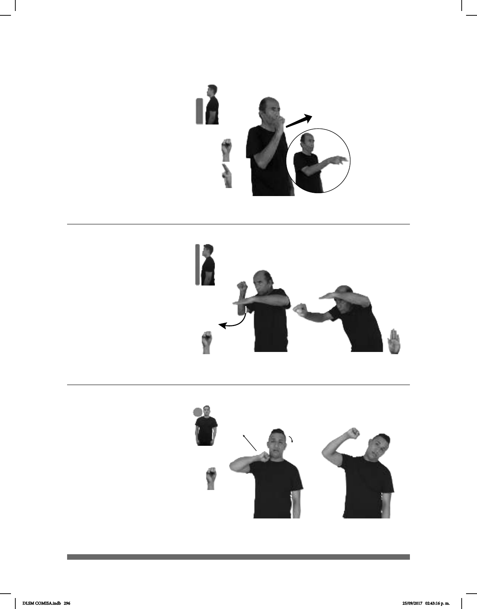

296
Seña: SM
S.1
Palma hacia afuera.
Inicia sobre el cuello y
termina a la altura de la cabeza.
Recto.
Cabeza inclinada
hacia la izquierda, ojos cerrados.
1. v. tr. Colgar a una
persona o un animal por el cuello para
darle muerte.
(S-9)
ANTES MUJER JOVEN YA pro-ELLA AHORCAR
Una adolescente se ahorcó.
Seña: SB
MD S.1, MB B-P.6
MD palma hacia afuera;
MB palma hacia abajo.
A la altura del pecho.
La MD se mueve formando
un arco por debajo de la MB.
Cabeza adelantada.
1. v. tr. Inclinar o bajar
alguna parte del cuerpo especialmente la
cabeza o el tronco. 2. v. prnl. Inclinarse
piernas o doblando la cintura.
1
2
(S-8)
pro-TÚ AGACHAR-CABEZA
pasar
Agacha la cabeza para pasar.
Seña: SM
Seña que pasa de S.1
a U.3
Palma hacia la izquierda.
A la altura de la mejilla.
Recto hacia el frente.
Mordiendo los
labios inferiores.
adj. Qué trae fortuna o
buena suerte.
(S-7)
_______muy_
TODO AFORTUNADO
Tú eres muy afortunado en todo.
DLSM COMISA.indb 296 25/09/2017 02:43:16 p. m.